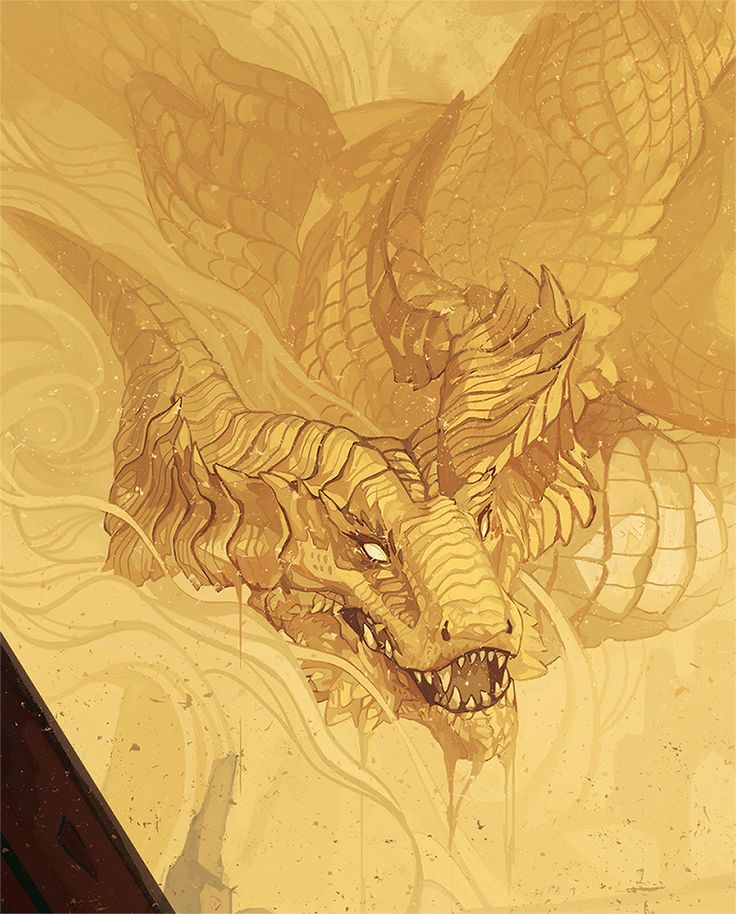
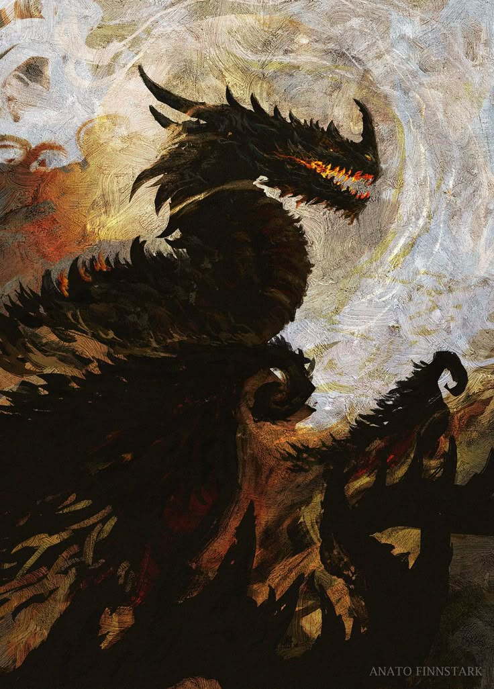
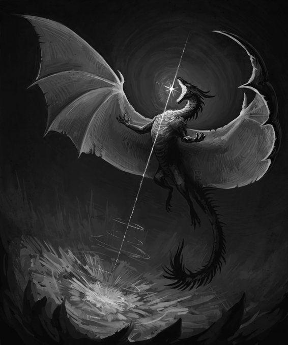

O Reindado de Polaris é regido por um panteão de divindades. Iniciado por Polaris que criou os mortais por capricho, os deixando a mercê de suas próprias capacidades e intervendo no mundo sempre que lhe convém — ou quando alguém lhe reza com fervor suficiente. Cada deus tem seus símbolos, seus devotos e seu preço.
✦ PRIMORDIAIS
![[Polaris]](Polaris.jpg)
✦ primordial
Polaris
A Estrela Polar
Origem de tudo, das manhãs quentes às noites frias, Polaris esta presente. É a entidade que abençoa o reino.

✦ primordial
Skadi
A Mãe Gélida
Nascida dos flocos de neve das nevascas que devastaram as regiões dos polos durante a ausência de Polaris, Skadi reinou. Ela era como uma mãe distante e quase imperturbável, sem piedade dos mais fracos, entretanto, ao ouvir os lamentos dos sobreviventes mais resistentes, ela entregou a suas filhas a missão de guiá-los pelas terras congeladas inclementes.
✦ PRIMOGÊNITAS

✦ primogênitas
Demétria
A Mentora
A mais velha entre as filhas de Polaris, ela foi responsabilizada a ensinar os seres vivos a viver em harmonia. Demétria desenvolveu um forte apego à natureza, ela está diretamente ligada a ela e aos seres que lá vagam...

✦ primogênitas
Mond
A Guia
A segunda filha de Polaris, dizem que quando ela nasceu, riu estrelas cadentes. Poemia foi atribuída a criar as constelações para que ninguém se perdesse. Ela é a mais bem-humorada das três irmãs, a frequência das chuvas de estrelas cadentes é uma forma de entendê-la. Dizem que toda estrela cadente é um sinal, apenas quem é direcionado pelo sinal pode vê-la.

✦ primogênitas
Poemia
A Cabeça na Lua
A filha mais nova de Polaris, outorgada a cuidar da lua e das marés cadentes. Poemia desenvolveu a personalidade oposta ao seu antecedente, ela é reservada e abençoa aqueles que buscam inspiração em suas obras. Os marinheiros pedem suas condolências ao embarcar, é muito comum ver um altares dedicados a ela em embarcações.

✦ primogênitas
Aucrib
A Caçadora das Montanhas
Aubrib conviveu entre os mortais, ela caminhou entre os caribus os trazendo como banquete para o povo faminto.
Nasceu adulta, a mais velha das gêmeas de Skadi, ela guiou os povos do Norte da Mãe Gélida. Sua morte foi ao sacrificar a própria carne aos lobos para alimentar para proteger seu rebanho.

✦ primogênitas
Leskie
A Misteriosa do Mar
A caçula das gêmeas de Skadi, ela foi lançada aos mares do sul da Mãe Gélida trazida acosta por focas que a derão sua pele para se aquecer do frio que a ausência de Polaris trouxe ao Reinado ao gestar a Dinastia Polar
Leskie conquistou a confiança daqueles que lá viviam arrastando rede cheia de peixes frescos da praia, ela guiou os residentes para a fartura aos manuseios e saberes empírico desconhecidos a eles que só a experiência poderia dar.
✦ CÂNON

✦ cânon
Kaambal
O Ganso Zeloso
Polaris deu ao ganso a obrigação de chocar os ovos dos dragões primordiais. A ave cuidou dos dragões até que atingissem a idade adulta. Por gratidão, a divindade transformou Kaambal no que hoje é o Reino Flutuante.

✦ cânon
Blae
O Dragão dos Céus
Inserirdescrição...

✦ cânon
Esth
O Dragão do Florescimento
Inserirdescrição...
✦ RENEGADOS

✦ renegado
Traidor
O que foi apagado
Inserirdescrição...